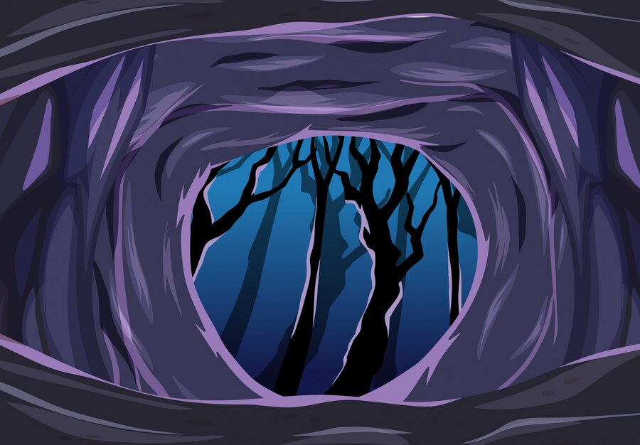

Introdução ao Cenário
Bem-vindo a Alvorecer das Cinzas, um mundo nascido do caos, onde a magia é um sussurro esquecido e as trevas espreitam em cada sombra.
Aqui, o equilíbrio entre luz e escuridão é sustentado por forças antigas e insondáveis, enquanto reinos decadentes e civilizações em ruínas lutam por sobrevivência. Cada passo pode ser o último, cada sombra pode ocultar algo muito pior do que a própria morte.
Inspirado nos clássicos da fantasia sombria, este universo é denso, brutal e repleto de segredos enterrados pelo tempo. Poderes antigos se agitam, profecias esquecidas sussurram sobre o fim dos deuses, e apenas os ousados — ou os tolos — desafiam o destino.
Princípio da Criação
No alvorecer dos tempos, a origem do universo permaneceu envolta em mistério, uma verdade perdida nas brumas do esquecimento. No coração do caos primordial, existia uma entidade antiga e inerte, uma força de poder volátil e consciência adormecida, conhecida pelos primeiros seres como Igruxshul, o Portador do Caos.
Durante um evento enigmático chamado Crepúsculo, essa essência primordial se despedaçou, e das suas ruínas nasceu a criação. Dessa fragmentação surgiram duas entidades colossais, conhecidas como Ephifies.
A primeira, Nothar, encarnava as sombras e a força bruta.
A segunda, Lissar, manifestava uma consciência refinada e um controle sutil sobre seu poder.
Juntos, moldaram os primeiros seres divinos
de Nothar nasceu Noth, o deus supremo do panteão
enquanto Lissar deu origem a Liss, a matriarca dos dragões, uma majestosa criatura alada que se alimentava da centelha do cosmos.
Geografia e Ambiente
Shadowmourner é um mundo de contrastes brutais, onde vastas
paisagens se estendem por terras indomadas e reinos decadentes.
De florestas ancestrais que sussurram segredos esquecidos a
montanhas que tocam os céus, de desertos castigados pelo vento a
mares tempestuosos que engolem embarcações sem deixar vestígios
— cada região carrega sua própria identidade, suas lendas e seus
perigos.
Nestes territórios, diferentes raças e criaturas moldam suas
próprias narrativas, travando guerras silenciosas ou forjando
alianças frágeis para sobreviver às forças que espreitam além da
compreensão mortal.
Magia e Artefatos
A magia em Shadowmourner é um poder esquecido pelos deuses e temido pelos mortais — um presente que pode rapidamente se tornar uma maldição. Poucos ousam trilhar esse caminho, e aqueles que o fazem pagam um preço terrível.
Raros são os que possuem o dom da magia, e mais raros ainda os que sobrevivem à sua prática. Temidos e reverenciados, esses indivíduos caminham na linha tênue entre o poder absoluto e a ruína inevitável. Cada feitiço lançado pode consumir a sanidade, corroer a alma ou despertar forças que jamais deveriam ser perturbadas.
Aventuras
Em Shadowmourner, cada jornada é uma luta contra o desconhecido, onde horrores ocultos e mistérios ancestrais espreitam nas sombras. Aventureiros desafiam a própria mortalidade em busca de verdades proibidas, enfrentando forças além da compreensão humana.
Cada escolha pode significar a glória ou a ruína, e muitas respostas vêm ao custo da